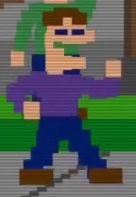
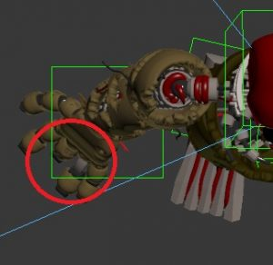
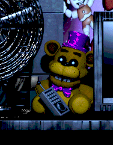

If you see any issues, please do make us aware via our Contact Form.
Thank you for browsing FNaFLore.com, we hope you enjoy the improvements that are coming to the site!

Timeline Mega Theory, by SenshiOfSadness
IMPORTANT
Due to the lore revelations Scott made on the 6th of November 2017, especially those regarding FNAF 4 being in 1983 and William being in Springtrap, this Timeline theory needs a big overhaul. The original Timeline Megatheory will be kept for the record, and the new one will be given a link here once it’s complete.
This theory uses all the easter eggs of FNAF 4 and differences in sprites as proofs, uses the year of the bite as 87, and also considers Michael to be the bite victim (it is tried to be explained as well).
The books cannot be used as normal proof. Update: After the release of the book “The Twisted Ones” there are things that have confirmed or debunked theories related to the books or the parallelisms drawn to the games. See the Updated sections to see what has changed. They are Michael’s mechanical body, Addenda and About the Springlocks suits.
The book cannot be used as normal proof. HOWEVER, and this is important, it will be used as proof on contrary regarding William, see Addenda at the end for the whole explanation.
This is the chronological order of the minigames and gameplay:
Minigame take cake to the children → GoGoGo! → Give gifts give life → Sister Location Baby minigame → FNAF 2 phone calls = SAVETHEM= FNAF 4 minigames → FNAF 2 gameplay → FNAF 1 → FNAF 4 gameplay → FNAF sister location gameplay → FNAF 3.
FNAF 2 phone calls, SAVETHEM and FNAF 4 minigames happen almost simultaneously, as I’ll explain later.
Before explaining the timeline thoroughly, there’re a few theories that needs to be told before for a better understanding.
The Crying Child is Michael:
1. FNAF 4 phone call. It’s not just an easter egg, Scott said that he didn’t fill FNAF 4 with random easter eggs, so it must have theorising weight. FNAF 4 gameplay it’s the crying child’s dream. However, how would he know that call? Because he’s Mike and he had to hear it during FNAF 1. Only Mike could have heard that phone call. FNAF 4 gameplay is after FNAF 1. It’s Michael’s dream.
2. Phone guy says that the victim survived, take into account this is his boss’ kid, not a random kid, so he would know if he made it through.
3. Michael has been seen coming back to life after the Scooper and after vomiting Ennard. So if he’s the bite victim, after the flatline he would have done so. He died, but for a normal person that counts as surviving.
4. When Michael is in the Scooper, Baby tells him that he won’t die. Because she already knows that he’s able to come back to life. I would add that she was the one responsible for said act. She’s like the puppet, able to give life to those who lost it. After flat-lining, she brought him back to life.
5. Sprite similarity. Michael is closer in design to bite victim (brown hair and fair skin) than Foxy bro (who has dark hair and tanned skin).

6. The pills on the night stand. Pills are not administrated to people in coma, because they cannot swallow them. So why of the things that were remembered from the time on the hospital are pills? Because he came back after the flat line and regained consciousness, and was able to take those pills.
7. Nightmare Fredbear and Nightmare are the product of Michael’s true fear: Fredbear biting him and seeing his sister’s death by Baby (this explains the belly mouth).
8. Funtime Freddy calls him the birthday boy in sister location. If you know Scott’s humour sense, then it’s real obvious and in your face, as much as Hand Unit having pasted the name MIKE on it.
9. In yet another show of dark humour, Phone guy during his first call mentions the bite of 87, the irony here is that he’s reminding the victim himself about the most traumatic event in his life.
The Sister during FNAF 4:
We find her empty room during FNAF 4. But that doesn’t mean she isn’t around. She’s possessing the Fredbear plush. The proofs for this are how you can found it inside flowers and inside a rain drain, pointing to her future as Ennard. The final text seen during night 7 has pale yellow letters, this is a connection to Baby, who had pale yellow eyes during FNAF world, and creepy girl also has pale yellow text and physical resemblance to Baby for us to make the connection between the yellow text and Baby/the sister.
In the last scenes of FNAF 4, the key phrase is “I will put you together”, it’s something that Michael says during the Golden Freddy cutscene of Sister Location. While the real significance of the quote is lost on me, it has something to do with giving life.
Some may argue that the Fredbear plush is actually a camera, judging from the plush present at the private room. This doesn’t necessarily contradict with the fact that it’s possessed, and it might be true.
Three purple men:
Let’s start by saying that there’s a copyright on 3 different purple man.
The sprites can be differentiated like this:
● William is the one at Take Cake to the Children and GoGoGo! His colour is close to magenta and has a stubbier build.
● Michael is the one at FNAF 3 minigames. Have a dark purple colour and a tall build.
● Third purple man (I’ll call him Dave) is the one at FNAF 4 easter egg and FNAF 2 SAVETHEM. Has the darkest purple colour and a golden dot (a badge) and he’s the tallest of the purple men.
People usually claim that the third one is William, but this cannot be. He cannot be a night guard because he’s a CEO. William owns Afton Robotics, and by extension, Circus Baby Party World/Rental and Entertainment; since it is the sister location of Fazbear Entertainment, Afton Robotics is the parent company of both. William during 1987 opened Circus Baby Party World, so during that time he couldn’t be a night guard.
The previous night guard mentioned in the phone calls of FNAF2 (Which I’ll be calling Dave, because he gets confused with William and in the books they are only one person) gets a whole indirect description from Phone guy:
Dave is a shady character (“…no one is allowed in or out, y’know. Especially concerning any…previous employees.”) he was the one under investigation; he knows to operate a springlock because we see that he’s the one handling the suits in FNAF 4. The SAVETHEM minigame shows us a second set of murders, and the one around the corpses is Dave. He gets fired/charged before night 5 in FNAF 2.
William isn’t the one being investigated for the second set of murders nor is he missing, because he opens the FNAF 1 location. The one charged is Dave, but he surely gets freed because the bodies weren’t found.
Now, I’m not sure about how implicated was Dave in all of this. He might not be a killer, but an accomplice; William killed those kids, but it’s up to Dave to hide the bodies. Yet another possibility is that he’s an accomplice, killing kids on William’s orders. Also, it’s not unheard that copycat killers exist, and he might have been one.
Two Foxy bullies:
Each one has a different mask, and one has tanned skin, the other has fair skin. The only thing in common is the shirt colour.
{kind=link}
The identity of Indoor Foxy is William. He’s the one tormenting the crying child. He even calls his kid’s bedroom observatory as seen in the breaker room map, he’s definitely not the caring type. He isn’t the one behind Fredbear’s speech, as I have stated before, therefore, the motivational chatter isn’t his.
The only thing that the Foxy brother was guilty for was only causing the bite. Even then, seeing how much force is needed in order to break a skull, the animatronics are made to be necessarily dangerous. William himself might be the mastermind behind the bite, suggesting this prank to his elder son, and killing a child (his own!) in the process without needing to dirt his hands making it look like an accident.
I have already said that the purple man we saw in the FNAF 4 easter egg isn’t William. So William can be Indoor Foxy and that wouldn’t make a contradiction.
About Plushtrap:

Furthermore, if you lose said minigame you don’t get a game over, in other words, you don’t die from it, what happens is that you (as Michael) have lost part of the finger.
You may say that that finger isn’t Michael’s but part of the Springlock suit, which brings us to the next theory.
{kind=link}
Michael’s mechanical body:
(Entry updated on 7/July/2017, see it’s original version here)
Michael is actually a robot, and one so advanced that perfectly emulates the human body, like having a pulse, it can even heal from wounds if we take into account that he was the bite victim. ALSO he has a soul. And this is important, because the soul allows him to have emotions, produce blood and fluids and breathing. These are the paranormal abilities that have the animatronics; they are seeping blood and mucus long after the bodies have been removed, and Bonnie in The Silver Eyes was mentioned to breathe. It seems that a soul possessing something gives it abnormal organic properties. He’s just like the animatronics, but he has a robotic body designed to house a soul.
There’s undoubted proof for this kind of body, the sound of the Scooper when it hits Michael, it’s not just a “splotch”, the sound of viscera, there is as well a sound like a “clank” as in the scooper has hit something metallic. Scott mentioned about the Scooper that it works removing the internal organs, but in its path, there are the ribs, and when the Scooper hits Michael’s ribs, it makes that mechanical sound.
This explains some curious things we see in the image, like guts intertwined around the endo, which would be impossible since the springlocks cuts into the guts.
Click on the link to see the Springtrap on the FNAF Second anniversary picture.
{kind=link}
I don’t like to draw things from the books unless necessary but, Charlie is supposed to parallel Michael, because she isn’t normal either. She also has a mechanical skeleton. She dented a car when she sat on it, despite being described as skinny, so her bones are actually heavy. There’s also the fact that she has three different sized closets as seen here:
“Why do you have three closets?” John had demanded, the first time he came over. She looked at him blankly, confused by the question.
“’Cause that’s how many there are,” she said finally. Then, defensive, she pointed to the littlest one. “That one’s Ella’s, anyway,” she added. John nodded, satisfied. Charlie shook her head, and opened the door to the middle closet—or, tried to. The knob stopped with a jolt: it was locked. She rattled it a few times, but gave up without much conviction. She stayed crouched low to the floor and glanced up at the tallest closer, her big-girl closet that she would someday grow into. “You won’t need it until you’re bigger.” Her father would say, but that day never came. It now hung open slightly, but Charlie didn’t disturb it. It hadn’t opened for her, it had only given way to time.
What there are inside them are different sized skeletons for her, because she needs to grow, but can’t because of the nature of her own body. The homecoming of aunt Jen to the house could perfectly be for getting the parts that’ll make her grow.
Another one who has all the tickets to be another robot is William himself. This is nearly confirmed in the books and in the games we can safely assume the same. For starters, he seemingly “survived” a springlock accident and healed, just like Michael “survived” the bite and healed. The parallels don’t stop here, Michael after getting scooped and having Ennard inside him is revived and starts to rot, William in the book is impaled by the Springsuit and he didn’t start to rot until he was revived as well. In both cases they had metal inside them; having a foreign substance won’t allow the bodies to properly heal, like having a bullet embed on a wound. The tissue around it may get infected and not heal properly, leading to gangrene. The difference between William’s first springlock accident and the second is the removal of the metal pieces.
There’s also two things mentioned in the book, which further proves this theory. First, William after getting springlocked at the end of The Silver Eyes is bleeding profusely, and this blood is, in fact, fake.
The other is when he is speaking to the group:
“No, I am quite confident that I will survive.”
[…] “And what makes you think they won’t kill you?” John said again, and Dave’s face took on something shining, almost beatific.
“Because I am one of them,” he said.
Most have assumed that William says this because he’s crazy, but what if he’s actually telling the truth? He has basically confirmed that he’s a robot.
Lastly, during the Golden Freddy cutscene, at the end of his spiel, Michael’s voice turns robotic, metallic. This serves other purpose than to simply show us that he is Springtrap talking, in the book, William’s voice also changes from a rough voice to one rich. It’s the same thing but in reverse from one another. Perhaps they don’t use vocal cords to speak (Michael clearly lacks them), but voice boxes.
About Fritz:
His real surname could be, in fact, Afton.
I came to this possibility thinking about what kind of person mingles with the animatronics on the first day.
First it is someone who knows how to deal with the animatronics without an explanation, the phone calls extend for hours and he didn’t need to listen to them, because he already knows. To the point that the only other person we have seen who can change their programming is Michael Schmidt, aka Michael Afton.
A random technician could be a possibility, but, as I said, it is his first day working at Freddy’s and he already knows, how to deal with them and how to tinker them.
Mike only acted on the programing on the seventh day. If his motives are similar to the ones on sister location, investigating about his sister, he wanted to make sure he could find anything first before doing something so risky. As to why he did it, my guess is that modifying (elevating) the AI he expected the animatronics to do something different. Perhaps he expected them to speak? It’s unclear.
However, Fritz, instead of having an undercover investigation, rushes to said tinkering, for possibly the same reason as Michael. This shows us a person who is impulsive and/or rebellious. A teen would be fitting, the only thing, that he would need to be 18 to work at night.
There’s also the similarity in the surnames Smith and Schmidt. They are false surnames so that’s why they don’t care how they are written, and the reason for this is that it could very well be their mother’s maiden surname, and they have heard it but never have seen it written.
So, we have someone who knows how to deal and tinker with animatronics, he’s also rather rash, and his mother’s maiden surname sounds like Smith/Schmidt. The last bit doesn’t really help us, but the former two, lead us to a possible suspect: The Foxy brother.
In the FNAF 4 minigames if Michael is 12, the brother could very well be 18; the differences in height are so big to differentiate them between adult (the ones in the suits), young adult (the bullies) and almost teen (the crying child).
TIMELINE
● 1973?: Fredbear Family Diner opens (FNAF 1 night 1 quote is used).
● 1982: Date taken from the source code. Given that it hasn’t been solidly related to anything and yet it’s been implied to be important, I’ve decided that this is the year Take cake to the children minigame takes place. We see on it a purple guy, William, killing his first victim, and leaving the corpse on the open. This kid becomes the puppet, as shown in the jumpscare finishing the minigame.
SPECULATION: William modus operandi is different to what we’ll see in the future, so the motive of the killing must be different as well. I propose that the reason for this murder is to buy Fredbear Family Diner. FNAF 2 night 5 quote refers to “the original restaurant owner”, which I interpreted the meaning to be the “original owner of the restaurant” instead of the “owner of the original restaurant”, and that would give a meaning to that odd murder, to buy Fredbear from its original owner. Afton Robotics would become the parent company because of that buy out. I’m not sure if William created the robots from the beginning.
● 1983: This year is related to the next list.
o FNaF4 Nightmare Gameplay House
o Fun With Plushtrap Hallway
o Plushtrap himself
o Fredbear and Friends
o William Afton himself (he uses it as a passcode so it must be important)
Now, for what really happens in this year, clearly important for William, I have come to the conclusion that the minigame Go Go Go! takes place during this year. In this minigame, we see 5 children waiting for Foxy to come, and after William appearance (this sprite is the same as Take Cake To The Children) these 5 children are dead. Notice that they are not in a back room, because the pirate cove is just aside the dining area (if we assume that this is FNAF 1 location, yet it takes place in 1983 not 1993) and also that William doesn’t have a golden suit. In other words, this is not the missing children incident mentioned in the newspaper.
The minigame Give Gifts Give Life, takes place between this year (1983) and 1987, because it is about the possession of the original 5 animatronics referenced in FNAF 2 night 1 quote “I want you to forget anything you may have heard about the old location.”, night 2 “(..)I’m sure you’ve noticed the older models, sitting in the back room. Uh, those are from the previous location, we just use them for parts now. The idea at first was to repair them. Uh, they even started retrofitting them with some of the newer technology. But they were just so ugly, you know? And the smell…” and FNAF 4 pigtails girl “(…) I hear that they come to life at night. And if you die, they hide your body and never tell anyone.” Please notice that Golden Freddy is among the animatronics given life, therefore, the popular theory of ‘The bite victim possess Golden Freddy’ is false, and by extension, his possession of the Puppet.
● 1987: This year is cluttered but bear with me.
First event that happened this year is told in the Sister Location Circus Baby minigame. This is the death of the little miss Afton aka Ice Cream Girl. There was in fact a witness for the fatal accident. Her brother, the crying child, due to the fact that one of his biggest fears manifested through Nightmare Fredbear’s mouth belly is being eaten by an animatronic.
{kind=link}
He could witness this murder because, although Baby was keeping check on the children in the room, he has a tendency on hiding below the tables, and he could have bypassed Baby’s sensors.
This is the reason he started to cry. He was mourning his sister.
I might add that she’s his twin sister by drawing some parallel to the book with Charlie and her brother Sammy, but this is speculation. This event goes first due to the empty room shown in FNAF 4, the sister is dead and the toys are laying around, so her demise must have been recent.
This event happens at Circus Baby Party world, which was extremely short lived, and closed “officially” due to gas leaks.
It would reopen during the 90’s under the name Circus Baby Rental and Entertainment.
Now this is where things get confusing.
FNAF 2 phone calls are prerecorded during the summer and they happen almost simultaneously as the minigames of FNAF4, it includes as well the SAVETHEM minigame.
The order of the night guards working at the FNAF 2 location goes like this:
● The first guard, who moved to day shift,
● then a second unnamed one (the one who originally listened the calls),
● then Fritz
● and lastly Jeremy.
The first night guard is the one mentioned in the tapes, he was moved to day shift and I called him Dave on the previous theory.
Then, the one the calls are directed at, works during SUMMER, it cannot be Jeremy because he works in NOVEMBER. He is presumably moved to day shift.
Then Fritz, because in the pink slip, it says he’s the employee #3. Plus, it’s his first day at Freddy’s.
Last Jeremy, his pay check is in November, he cannot be working at summer; and the place is already shut down, seen in the condition of the place, while in the tapes is clear that the place is still working.
The contradictions found in the calls can be explained if in the first place, we accept that they are pre-recorded. Doing this eliminates the summer job paradox; and explains the dismantled look of the place because it is no longer in working condition.
To ease the comprehension, I’m going to comment the FNAF 2 phone calls and the FNAF 4 minigames in chronological order.
o FNAF 2 Night 1 (From June 26th 0:00 to June 26th 6 A.M.):
▪ The call clearly states that this is a summer job, so it cannot be directed at Jeremy Fitzgerald, because his paycheck reads November.
This call also tell us that the original 5 murder took place, there are already rumours and the odour quote later on.
This week Dave is working during the day shift. He was moved on because of conditions of the job, as in the withered animatronics.
o FNAF 4 Day 1 (June 26th):
▪ The crying child is locked in his room. This is not the first time he’s locked up and has suffered similar abuse in the past.
▪ SAVETHEM takes place this night before midnight. I believe that this is actually the Missing Children Incident seen in the newspaper clips. You may argue that there isn’t any golden suit in sight, but we’ll see that this purple guy is the one that helps co-workers into the suits, he knows how to handle them and where they are.
o FNAF 2 Night 2 (From June 27th 0:00 to June 27th 6 A.M.):
▪ Phone guy comments about the models from the previous location.
o FNAF 4 Day 2 (June 27th):
▪ During this minigame he’s scared by a person wearing a Foxy mask from behind the TV. This person is William.
o FNAF 2 Night 3 (From June 28th 0:00 to June 28th 6 A.M.):
▪ During this phone call, Phone guy says that there are rumors of children having disappeared and that Dave saw nothing unusual.
o FNAF 4 Day 3 (June 28th):
▪ The crying child is left at Freddy’s. His father fully knows that he hates the place, and still he brings him to his work place. The reason for this hate, despite loving the characters, is because Baby was responsible for the death of his sister. And this fear extends to any animatronic being bigger than himself. Today we see Dave during the easter egg of FNAF 4.
o FNAF 2 Night 4 (From June 29th 0:00 to June 29th 6 A.M.):
▪ Phone guy comments that there has been an investigation. He also says that the facial recognition has been tampered, but in fact, the SAVETHEM children are already possessing the Toy animatronics.
o FNAF 4 Day 4 (June 29th):
▪ Michael is taken once again to Freddy’s and today he’s able to come back home. Many people think that the kids shown here are the ones that will possess the toy animatronics, and that’s reasonable with the girl with the broken toy chica and a balloon boy, the number of kids seen also seems to align, but since I have already said that the victims are already dead, they cannot be the ones. His father still jumpscares him, this time from under the bed.
o FNAF 2 Night 5 (From June 30th 0:00 to June 30th 6 A.M.):
▪ The pizzeria is placed in lockdown and no one is allowed in or out. The previous employee is under suspicion and he’s fired and/or arrested, that’s why Phone guy offers a position on the day shift. They try to locate the previous owner of the restaurant; its name may be “Fredbear Family Diner”.
o FNAF 4 Day 5 (June 30th):
▪ During this day the crying child is locked in what seems, parts and service. If this location is the toy location, that would mean that he was inside the lockdown the whole day (Michael is really unlucky it seems). This is the only day that the Fredbear plush doesn’t speak to him.
o FNAF 2 Night 6 (From July 1st 0:00 to July 1st 6 A.M.):
▪ The second night guard is moved to day shift on the next day, being told to attend to a birthday party. (How many important birthday parties do we know of? Only one). He mentions that the Toy location is going to close, but not before the birthday. The newspaper clip mentions that the Toy location closed due to malfunctions of the animatronics
▪ Also Phone guy tell us this: “Someone used one of the suits. We had a spare in the back, a yellow one. Someone used it…now none of them are acting right.” Phone guy while speaking this phrase suddenly links the murder to the toys malfunction, he realizes that the toy animatronics are possessed.
o FNAF 4 Day 6 (July 1th):
▪ Today is the bite of 87.
● 1993: During this year two main events take place, first the FNAF 1 gameplay and then FNAF 4 gameplay.
o FNAF 1 gameplay. After a week of work at Freddy’s Mike gets fired. This Freddy’s restaurant gets closed shortly after.
o FNAF 4 gameplay. After surviving more than five nights at Freddy’s, Michael starts to have nightmares. They bear a strong resemblance to his previous work, most noticeably the patterns of the animatronics. However, these nightmares are set during his childhood, in other words, while the dream takes place during the 90’s (the phone call proves that), the environment and animatronics are from the 80’s. The nightmare animatronics were real, this is proved by the FNAF Sister Location easter egg inside the private room, which after entering 1983, show us the bedroom seen during the nightmares.
Not every nightmare animatronic, used to be real, Nightmare Fredbear and Nightmare are products of Michel’s mind. Using the map seen in the breaker room in Sister Location, each dot marks an animatronic possible position. The only one who could be behind the creation and control of those animatronics is William, furthering his ill intentions towards his son. The cameras are pointing toward the places the animatronics would “interact” with Michael. It’s interesting noting, due to the angle they are pointing at, that they are placed in the ceiling or quite near it, so a camera hidden in the plush seems more unlikely.
● 1995: Sister Location gameplay. I’m unsure which year did Circus Baby Rental and Entertainment opened, but I’ll stick to the LLC and say that it “reopened” during the 90’s (it closed as Circus Baby Party World and reopened years later as Circus Baby Rental and Entertainment). The Freddy’s that closed that was mentioned by HandUnit is the FNAF 1 location.
Some things during Sister Location caught my attention, namely when the Bidybabs mention someone looking similar to Mike (“Is it the same person?”) and that this person was the one who made the hiding spot. My suspicion is that this was Fritz, Mike’s elder brother or maybe Dave. Another one is that there are two technicians hung on the stages, why didn’t Ennard used them to scape? It’s clear that they tried because during the walk to the Scooping room, we hear a squishy sound that is called in the files bloody guts. They did the job of hollowing them out but had to use Michael instead.
At the end of Sister Location, Michael died Scooped and the he starts to rot. After a few days/weeks Ennard leaves Michael body, killing him again in the process, is in this moment that we see, that the one responsible for Michael’s immortality is Baby or rather his sister. The chanting is the clue that leads us to this conclusion and also Fredbear plush’s “I’ll put you together” means she did it before, after the bite.
● Prediction: FNAF 6 or Sister Location 2 will take place in the 30 years, between Sister location and FNAF 3. Since I’ve stated that the sister is the one behind Michael’s coming backs, why did it take her 30 years to do so? She must have some sort of throwback, and the lines in the source code of FNAF World and ScottGames seems to imply that she’s left alone by the other robots, leaving her vulnerable.
● 2025: FNAF 3 events take place.
Addenda:
(Entry updated on 7/July/2017, see it’s original version here)
The books have debunked my theory that William was the opposite in the games and the books, particularly that he was not the one who made the robots. LLC Afton robotics makes an appearance on the books, greatly damaging this theory.
In the books, Charlie is meant to be Michael’s parallel. Both have a twin brother/sister that is taken from their side (Sammy is taken by William and Ice Cream Girl is killed by Baby). It’s also hinted that Charlie isn’t completely normal, having dent a car by just sitting on it, and also having 3 different sized closets. They both also have dreams where they turn back into kids.
Other theories (More like opinions):
About Golden Freddy:
I have to admit, that I don’t truly have proofs to make this theory solid enough, so this is my opinion on this mysterious “animatronic”.
Golden Freddy is not a physical animatronic. It’s a phantom that takes form on his memories of Fredbear. These memories are muddled, because the real Fredbear is golden with purple accessories, but what the kid remembers about Fredbear is literally “He’s just like Freddy but golden”. That’s why Golden Freddy resembles more Freddy as he’s shown in the games (in FNAF 1 copying the classic look, and in FNAF 2 copying the withered look) than Fredbear, and why it has black accessories instead of purple.
About Shadow Freddy:
Shadow Freddy identity is quite a mystery. But I think I have a good idea on who could be him. He appears during FNAF 2, 3 and 4 in the last one under the name Nightmare.
Starting from 4, there is someone Michael (the crying child) would be more afraid of than Fredbear himself, his own brother, as he was the responsible for the bite.
As I have discussed before, if the brother happens to be Fritz, this wouldn’t contradict his appearance in FNAF 2 because the only place where Shadow Freddy can appear, don’t show up at the same time as Fritz. Fritz could have break in during Jeremy’s shift with the appearance of Shadow Freddy (I consider that Jeremy starts working after Fritz is fired). Shadow Freddy is a suit, a disguise.
This also explains the dream sequence seen during FNAF 2. Fritz, like Mike, is also sent to work at the FNAF 1 location, and his surviving method was the suit. Whether it was before or after Michael, I don’t know.
But I do know that he assisted Michael for dissembling the animatronics, luring them to the safe room. During the FNAF 3 Springtrap sequence, Michael appears to be alone, but this cannot be the case since we have seen Shadow Freddy get into the room. There are arcade machines that could be hiding Fritz behind them.
Here’s a recreation: Michael is pointing at the ghosts saying “They are here! Brother, get them out of me!” but Fritz is too scared to leave his hiding spot. After being attacked a few times and his brother not helping, Michael gets angry and decides to use the same defence his brother used earlier. He uses the only spare suit in the room, to avoid the onslaught. With such bad luck, that it happens to be a springlock suit (Or is it?).
Reddit user GBAura mentioned that in the source code, despite having disabled the camera, Shadow Freddy can still appear. If we were to remove the static we could somehow see him. This disproves the theory a lot.
(Also, in terms of the source code for your theory (which you kindly asked), Shadow Freddy can still appear. It’s just you can only see it if all the withers are absent in the Back Room. If I were to remove the static somehow and look for myself, I believe you can still see it.
Speaking of cameras in the Custom Night, the camera for the Main Stage with the Toys is also disabled. I think it’s pointless to use that as lore evidence since Scott did the same for SL’s Custom Night when Ballora comes into play. Why? There’s no graphic of her being on the cameras, it’s just Ennard there the whole time with the static in the way. It’s just technical game stuff.
In 2, I guess Scott did it because there’s no need to use the cameras on those locations since you’re using the music box and checking the animatronics in the vents and office. It’s pointless to looks for them in the rooms where they first start.)
About the Springlock suits:
(Entry updated on 7/July/2017, see it’s original version here)
There are 2 springlock suits. These are Springtrap’s and the one that encased Mike on Sister Location.
There’s only 1 sister location. This is where the Springlock accident took place.
This surely refers to where the FNAF Sister Location takes place, because it’s after all a storage facility. However notice this. Spring Bonnie isn’t here, but in the FNAF 1 location.
I think I have figured out what this means. There are 2 springsuits and there are also the temporary suits, the yellow one refers to one of these.
The Springlock accident happened before FNAF 2, and they have already sent the springsuits to the storage. So what Michael had found during the FNAF 3 cutscene is not the Spring Bonnie suit, but one of the spare ones, the golden one. Springtrap is not the Spring Bonnie springsuit.
Let me ask you this. We have assumed that the springlock animatronics are Spring Bonnie and Fredbear. But is the springlock suit of Sister Location Fredbear? Thematically it would make more sense, but shape wise doesn’t look like it. Why has one springsuit faceplates and Springtrap doesn’t? What if we are looking at this the wrong way? What if the thematically wrong suit isn’t the sister location one, but Springtrap?
As I have discussed before, what we see of Springtrap isn’t the springlock endo but Michael’s skeleton. So where are the springlocks? We know that there is a Spring Bonnie suit, but what if what Michael is wearing isn’t it, but one of the temporary suits? This explains the lack of a second endo. And yet, the only part of Springtrap that has something remotely harmful is located in the head, with beams going right up his jaw into the palate, among other things. It’s also weird that Michael full knowing how dangerous the Springlocks are, decided to wear one, so he could have been tricked into thinking that what he was going to use wasn’t one.
The more I look into the FNAF 3 minigame scene, the more contradictions it arises. Having Michael rot, how he could bleed so much? And as for FNAF 3 itself, since I have stated that what Michael has isn’t a Springsuit, why is he lured toward the sound?
There exist a Spring Bonnie suit, however, I seriously doubt that it is the one Michael has.
How are all these contradictions explained?
Let’s start by saying that the name Springtrap is not due to the springlock mechanism, but from the character itself. Spring Bonnie is a character whose name was made before the suit itself (phone guy said that they have made two specially designed suits, so the characters precede the suits). “Spring” originally refers to the season. Why? Because Easter takes place in spring, so instead of the Easter bunny we have Spring Bonnie. It’s not named after the Springlock, Scott was smart to make a play on using “spring” for both the season and the mechanism.
Now, what we see at the FNAF 3 cutscene is not a springlock accident, but an elaborate make-believe.
The blood that leaves Springtrap is not real blood, it’s not even Michael’s fake blood. The suit is equipped with a mechanism that releases blood as if it was a springlock accident. That’s why Michael uses the suit, he’s confident that it won’t kill him because it’s not a springlock suit.
How did he die if it wasn’t a Springlock accident then? Something so sudden that Michael didn’t have time to take off the costume. He was murdered. By his accomplice, Shadow Freddy.
How do you explain Springtrap going to the sounds if it isn’t a springlock suit? The reason Springtrap goes to the sound is not because it’s a springsuit, it’s because the phantoms are helping him (the hallucinations, they include BB) and he thinks that the laughs are part of his friends help, trying to direct him.
Spring Bonnie is a suit/animatronic however, it isn’t Springtrap. Springtrap is one of the temporary suits. The real Spring Bonnie animatronic must have faceplates.
Finally, the bars seen in the head, the ones that impaled the inside of the mouth and other metal chunks around the head seen in the anniversary picture of Springtrap, why are they here? They are not part of a Springlock suit and they are (probably) not part of Michael. I think it is a modified head from the temporary costume. Modified so that Shadow Freddy could kill the walking corpse of Michael, breaking his head. Personal thought: This would be ironic since it would be the elder brother killing the bite victim crushing his head again.
About the Fredbear plush:

With the possibility of it being a camera, some people say that William is the one behind Fredbear’s speech.
However, what the plush has isn’t actually a walkie-talkie. It might look like one but it’s a remote. This is because it doesn’t seem to have a microphone but a speaker. Also, if the camera was in the plush, how come all of the angles we see from the cameras are like from the ceiling?
{kind=link}
About the “not an experiment” theory:
(Added 11/July/2017 and expanded on 11/September/2017)
I believe that the popular theory about FNAF 4 being an experiment is not true, and that it is a game instead, or better said a torture. I’m basing this on what the phrases the FNAF 4 trailer said.
“What game do you think you are playing?”
This is in my opinion the quote that confirms that it’s not an experiment but a game. A game played by the Crying Child, and enjoyed and planned by his father William Afton. It’s a show for him, there are cameras to see the interaction from his child with the animatronics, like some sort of “hunger games” or a reality show. Look at the fun with Plushtrap minigame: What sense is there to skip 2 hours in an experiment? If it is a game then there are rules and they apply in this case. There’s also too little to make a proper experiment, just cameras; in an experiment there would be more material and more means to gather scientific evidence. We would also need to know for what the experiment is for, but in the case of it being a game the answer is much simpler: personal enjoyment. William’s to be specific.
“What is it that you think you see?”
While the SL video footage has shown us that the bedroom is real, we have no idea of how the nightmare animatronics actually look like. The question implies that what we see of them is not their actual appearance. This is supported by the book’s audio device which created hallucinations. I think I have an answer for their real appearance. They are not their own kind of animatronic line, but one we have previously seen. They may be the withered animatronics from FNAF 2, before they were taken to that location.
“What have you brought home?”
If they are the withered animatronics they have a reason to be in the house, William took them to make them retrofitted with the facial recognition system. But what if they were also given the audio device? The purpose for this is to make them look prettier. That was one of the complains of the withered:
If they were given ‘the cognition altering disk’ or whatever is used to change the perception, then the costs of making them prettier would be much lower.
They weren’t going to be taken to the stage soon, so William could use them for personal enjoyment at home, full knowing that his child would see them as monsters. Later they are taken to the FNAF 2 location. The “games” started as early as the sister’s death (that’s the reason the crying child is afraid of them, seeing his sister death) and finished when the withered animatronics were taken to the FNAF 2 location (the week of the former night guard when he complained about conditions).
Another point that supports the nightmare animatronics being the withered, is their “path”. The path is similar to the FNAF 1 gameplay, and since the withered animatronics became the classic animatronics from FNAF 1 this is a nice point to take into account.
About William:
There’s something about William that makes me think that he intended to kill all of his children.
For Michael is clear how he tormented him during his childhood (jumpscaring him and even using the Nightmare animatronics) and maybe being the mastermind behind the Bite. Afterwards he sent him on suicide missions with the promise that Mike could meet again his sister (Ennard said: “Isn’t that why you came here? To be with me again?”).
If Fritz is also one of the Aftons, the elder brother, then he was in danger as well for going to the toy location. Maybe he was blackmailed for the Bite, after all Fritz shift happens after the Bite.
For the daughter, William knew that Baby’s kill mode is activated when alone with a kid, so why didn’t he accompany her for her to see Baby? Because otherwise, she would have come play with her on his sight or surrounded by other children.
He uses reverse psychology to make her more interested on Baby; she keeps begging him to let him see her, to which he apparently says no. She asks why he doesn’t let her play with Baby, but surely he simply says that she can’t without an excuse, making Baby a forbidden fruit of sorts. So that when she disobeys him, she wouldn’t have second thoughts. Doing something you know it’s wrong, makes you secretive about it, increasing the chance of being alone. And lastly, the last phrase of Miss Afton when she finally snucks into Baby “Where did everyone go?” may imply that she was left alone on purpose. She didn’t intended to see Baby alone, just to meet her behind her father’s back. While she also said “Daddy isn’t watching.” let’s remember that William is playing a mind game with her, so she needed to think that she was being secretive; William could have pretended not to notice her.
Murderous Robots or murderous Ghosts?:
For the robots: Looking at the design of the SL robots is clear that William invented them with shady intentions, to even the possibility of making them killing machines. For the Bite, Fredbear had to have quite strength to break a skull, Fredbear’s jaw must be unusually strong for a normal animatronic. Another point toward the robots being the ones behind the killing intentions, is that in the custom nights you raise their A.I., this could be applied on a meta sense of the game mechanics or in an in-universe sense. You might ask about Golden Freddy in FNAF 2 with him being a phantom like entity but here’s my counter: What it is touched is in fact the Fredbear animatronic. No, I’m not saying that Golden Freddy is Fredbear. But changing Fredbear, changes as well Golden Freddy’s behaviour, the ghost is forced to use its powers according to the robot’s A.I.
The reason they stop attacking at 6 AM could be very tied to the programming, if it was up to the ghosts, what’s stopping them from going forward? We know that Phone guy says something that they don’t have a night mode, but what if they do have it? And said night mode is kill mode? This could make William the ultimate enemy in the series. Not only he killed the kids, making him the villain, but if also he’s the one behind the animatronics going after you at night that would make him the antagonist (indirectly).
Then what do the ghosts do in all of this? They are the energy of the animatronics. The reason the withered move, even if they should be deactivated, is that the souls serve as their power source. There’s also the fact that if the ghost were the ones behind the killing animatronics, why do they attack indiscriminately? How can they not recognisance their killer? I know that The silver eyes offered some sort of explanation to this; although William says that they won’t hurt him because he’s like them and that they don’t really remember him (This thing I’m not too sure because I don’t own the book). What I’m trying to say is that in the books the animatronics behave like how we have always assumed and in the games there’s the possibility that the robots are the ones behind their murderous intentions.
For the ghosts: This requires little explanation due to it being the most accepted/known theory. They use the animatronics to find and kill their killer, with the added issue that they cannot seem to see who they are attacking. They also need for the animatronics to not have any kind of instruction for them to move the animatronics (They need a lack of mode).
Although, if the children were the ones behind the robots behaviour, shouldn’t they be able to bypass the facial recognition thingy? If they need a lack of mode to move, wouldn’t said mode be deactivated at the same time of the facial recognition system?
Things I cannot explain, I wish they get answered or I don’t have a solid theory for:
● Who’s the one having the dreams during FNAF 2? And why do they dream of the FNAF 1 location with the puppet?
● How many locations haven’t we seen yet?
● The identity of Shadow Freddy and Bonnie, why are they “important”?
● How long have the Bite Victim fought against the Nightmare animatronics?
● Why are the FNAF 4 gameplay bedroom and the minigame bedroom different ones? Do they belong to the same house? Whose bedroom is the one of FNAF 4 gameplay? I know I called it his kid’s bedroom but it could not be Michael’s current bedroom. Maybe it’s his former one or even someone else’s.
● Are Foxy brother (Fritz?) and the crying child (Michael) full brothers or half-brothers?
● Why is Nightmare Balloon Boy canon? My only guess at the moment is to say that the toy location coexists/is the same as the FNAF 4 location. But we already have the toys girl showing that. Another possibility is that he is the only character that can be interchanged with Plushtrap without affecting the lore. That’s why Nightmare has a role in the lore, and that would be affected if Nightmarrione was in the game instead.
● If the phantom animatronics are based on things the guard of FNAF 3 saw before, it must mean that he’s been around FNAF 2. Yet who it’s him? The voice sound too young for someone at least in their 50’s. (On a semi-related note: Henry from Bendy and the Ink machine doesn’t sound like he’s on his 50’s either, and he’s on a similar situation)
FNAF Theorist. I'll figure the lore, no matter how many twists are thrown on my way. Advice to myself: keep an open mind and be prepared for theories to be rewritten... a lot. Extra tip: consider FNAF to be both supernatural and Sci-Fi. I still think that Michael is the Bite Victim.